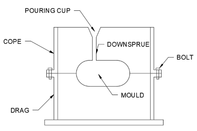

Casting
The following page of notes will cover:
- Sand casting
- Investment casting
- Die casting
- Resin casting
- Plaster of Paris casting
Sand casting:

How it works:
- Make a mould in the sand using to half moulds (cope and drag) making sure the corners are rounded/tapered
- Fix the cope and drag together with nuts and bolts
- Pour molten metal into case
- Let it cool and remove mould
- Apply finishes
| Advantages | Disadvantages |
|---|---|
|
|
Uses: Engine blocks, garden furniture, caterpillar tracks
Investment casting:
How it works:
- Cold wax mould made of desired shape
- Wax mould attached to sprue before being dipped into liquid ceramic/stucco
- Then heated to remove wax and set ceramic
- Molten metal is then poured into the cermaic mould and allowed to set
- Ceramic shell is then broken off revealing product
| Advantages | Disadvantages |
|---|---|
|
|
Uses: Turbine blades, gears, machine parts
Die casting:
How it works:
- Create and lubricate the mould
- Once mould has been created, molten metal is shot under high pressure into the die
- When the die is full, the pressure is maintained until the metal has solidified
- The mould is then removed and finishes are applied
| Advantages | Disadvantages |
|---|---|
|
|
Uses: Taps, model cars
Resin casting:
How it works:
- Mould made of desired shape
- Liquid synthetic resin poured into mould
- Resin hardens and the mould is removed
| Advantages | Disadvantages |
|---|---|
|
|
Uses: Collectible toys, models, figures, smallscale jewellery
Plaster of Paris casting (gypsum):
How it works:
- Mix the formula with water
- Poor into mould
- Allow to set
| Advantages | Disadvantages |
|---|---|
|
|